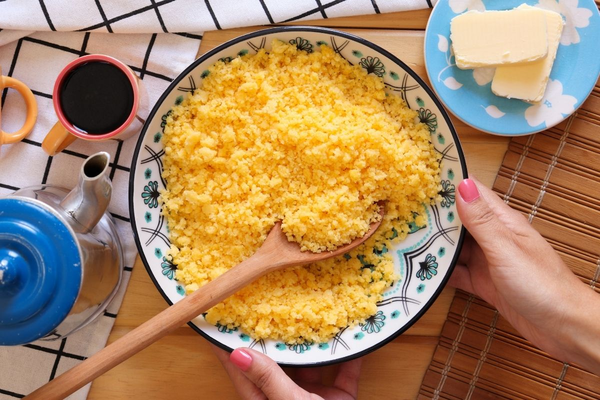

Receita para cuscuz

Ingredientes
- 1 chicará e meia de chá de farinha de milho flocada
- Meia colher de chá de sal
- Três quartos de xícara de chá de água
- 2 colheres de sopa de manteiga
Preparo
- Misture a farinha de milho com o sal em uma tigela grande
- Despeje a água e deixe hidratando por 10 minutos. A farinha de milho ficará com uma textura de areia molhada
- Prepare a cuscuzeira: preencha o fundo de água e encaixe o cesto
- Coloque farinha de milho hidratada sem compactar
- Tampe e cozinhe no fogo alto
- Quando começar a ferver, abaixe o fogo e deixe cozinhar por mais 10 minutos até o cuscuz ficar bem macio
- Com cuidado, transfira o cesto para uma tigela e solte o cuscuz com um garfo
- Em outra tigela, misture a manteiga com ¼ de xícara de chá da água fervente da cuscuzeira até derreter metade da manteiga
- Por fim, regue essa água com manteiga sobre o cuscuz e misture com o garfo [o restante da manteiga vai derreter só com o calor do cuscuz]
- Sirva em seguida da forma que preferir!
Bom apetite :D